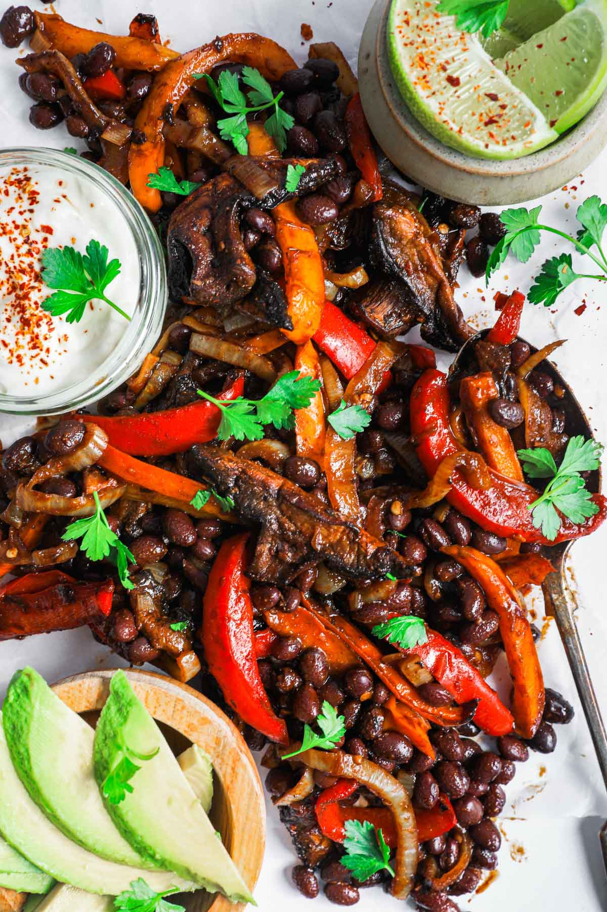

Mexican-Style Beans

Fajita style black beans
A recipe that can be made as a topping or a side! Great for a vegetarian option as well.
Ingredients
- Garlic powder + Salt
- 4-6 Strips of bacon (substitute with oil for a vegetarian option)
- 2 Cups Chicken stock
- 1 Sweet Onion
- Green, Yellow, or Red Bell Peppers (2-3 total)
- 1 Can of black beans
Steps
- Slice up your bacon strips into small pieces. If using oil instead of bacon,
just place 2tbps. in a pan on medium heat and skip to step 3.
- Heat your pan on medium-high, cook the bacon pieces, stirring until
crisp and brown.
- While the bacon is cooking, slice up your onion and peppers.
- Remove the individual bacon pieces from the pan, leaving the fat in it still.
- Sear your peppers and onions in the pan with the bacon fat until golden brown.
- Once the veggies are cooked, mix the can of beans with it, with the liquid.
Stir for 3-4 mins.
- Place your chicken stock in with the veggies
- Turn heat down to low, let simmer for 15-30 mins or until the stock has thickened.
- Serve however you'd like, and enjoy!